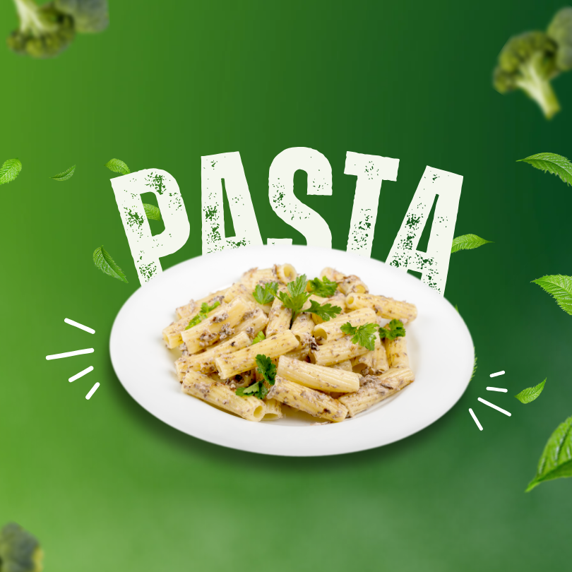

Pasta Recipe

Description
A more traditional homemade lasagna filling would be made with ricotta
but my mom's recipe calls for a blend of small-curd cottage cheese and Parmesan.
I have found none better anywhere.
Serve with a leafy green salad and crusty garlic bread.
Ingredients
- ½ pound ground pork
- 1 (.25 ounce) package active dry yeast
- 1 pinch white sugar
- 3 ⅓ cups all-purpose flour
- 1 tablespoon olive oil
- 2 cloves garlic, minced
- 1 tablespoon chopped fresh basil
Steps
- Gather all ingredients.
- Make dough: Pour warm water into a large bowl; dissolve yeast and sugar in warm water.
- Mix in flour, 1 tablespoon olive oil, and salt until dough pulls away from the sides of the bowl.
- urn onto a lightly floured surface. Knead until smooth, about 8 minutes.
- Place dough in a well-oiled bowl and cover with a damp cloth.
Back to Recipes